Highlighted author(s): Nigel Cooper
Authors: Diego Barberena, Nigel Cooper
Type: theory · Category: disordered systems and neural networks · PDF: https://arxiv.org/pdf/2607.06850v1
Analysis basis: full PDF text, analyzed in chunks
Topic relevance: 🔥 methods for driven-dissipative 4/5 · 🔥 non-equilibrium universality 4/5 · Keldysh / 2PI / non-Gaussian methods 3/5 · correlated / nonlocal dissipation 3/5 · driven-dissipative phase transition 3/5 · Kondo & dissipative impurity 2/5 · exotic spin models in light-matter 2/5 · non-equilibrium dynamics 2/5 · analog quantum simulation 1/5 · correlated cavity matter 1/5 · spintronics-quantum-optics interface 1/5
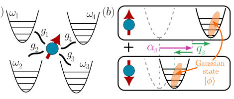
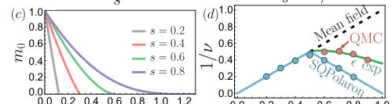
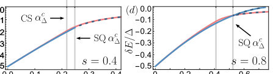
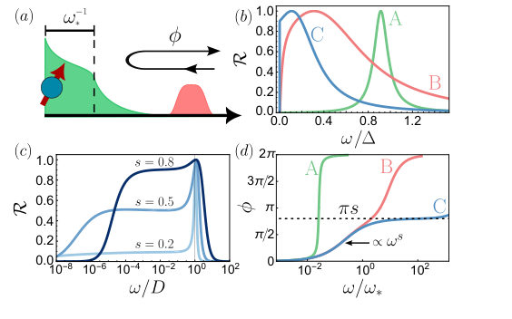
Summary. The paper develops and applies a 'squeezed polaron' variational wavefunction to study the localization transition in the spin-boson model. This advanced ansatz successfully captures complex boson bath correlations missed by simpler methods, leading to accurate predictions of critical exponents and energy scaling near the quantum critical point.
Why it may be interesting. This work provides a sophisticated theoretical tool (squeezed polaron) to analyze quantum criticality in open systems, yielding quantitative results on universal scaling behavior that are crucial for understanding decoherence and environmental coupling effects.
Main problem. The localization transition of the sub-Ohmic spin-boson model generates bath correlations inaccessible to standard variational ansatzes.
Main result. A 'squeezed polaron' wavefunction correctly captures critical power-law scaling near the localization transition and accurately determines the critical coupling constant across different regimes.
Method. The authors employ a generalized variational principle using a 'squeezed polaron' wavefunction that incorporates Gaussian boson-boson correlations to minimize the ground state energy.
Model / system. The study analyzes the Spin-Boson Model, describing an impurity spin coupled to a bosonic bath with a sub-Ohmic spectral function $J(\omega) \propto \omega^{1-s}$. The system exhibits a localization transition governed by the coupling strength $\alpha$.
Key observables. Ground state energy gain ($\delta E$), renormalized coherence ($\langle\hat{s}_x angle$), and scattering phase shifts for bosons.
Important parameters / regimes. Bath exponent $s$ (controls sub-Ohmic nature), coupling strength $\alpha$, and the critical coupling constant $\alpha_c^\Delta$.
Assumptions / limitations. The use of a 'squeezed polaron' wavefunction, which assumes Gaussian boson-boson correlations, and approximations involving low-frequency expansions for scattering calculations.
Figures summary. Figures compare the coherence and energy gain using the new ansatz versus standard coherent-state polarons; other figures show numerical collapse of scaling functions $m(y)$ near criticality.
Paper structure. The paper introduces the model and the improved wavefunction, derives key observables like energy and coherence, analyzes low-frequency scaling laws for bath correlations, and finally uses scattering phase shifts to confirm critical exponents derived from the variational approach.
The localization transition of the sub-Ohmic spin-boson model generates boson bath correlations that are, at low frequencies, analytically inaccessible to standard coherent-state-polaron variational ansatzes. In this paper, we introduce a ``squeezed polaron'' wavefunction incorporating generic Gaussian boson-boson correlations induced by the spin impurity. This gives the correct critical power-law scaling of bath observables near the localization transition together with a systematically improved ground state energy and a more accurate determination of the critical coupling. Our wavefunction captures the correct mean-field nature of the transition in the deep sub-Ohmic region. It also displays non-mean-field critical exponents in the shallow sub-Ohmic regime. Using the squeezed polaron as a starting point, we derive scattering phase shifts for bosons, and show how they encode the emergent energy scale that vanishes at the localization transition.
Highlighted author(s): Andrew J. Daley
Authors: Helene M. Lösl, Aydin Deger, Andrew J. Daley
Type: theory · Category: other · PDF: https://arxiv.org/pdf/2607.07547v1
Analysis basis: full PDF text, analyzed in chunks
Topic relevance: 🔥 analog quantum simulation 4/5 · entanglement & information structure 3/5 · QC/QI experiment 2/5 · Rydberg arrays 1/5 · exotic spin models in light-matter 1/5 · non-equilibrium dynamics 1/5
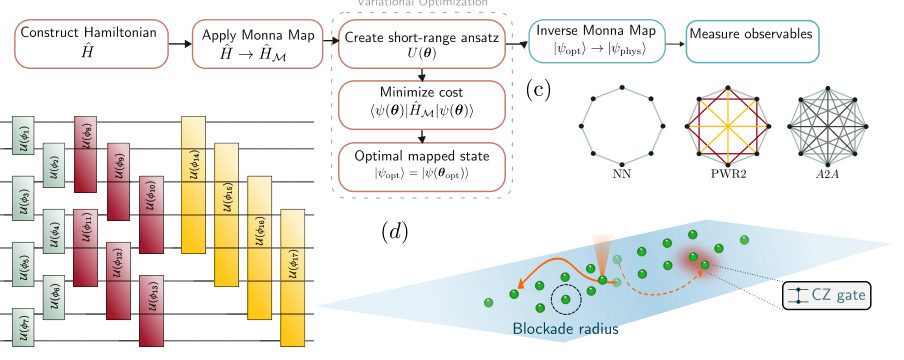
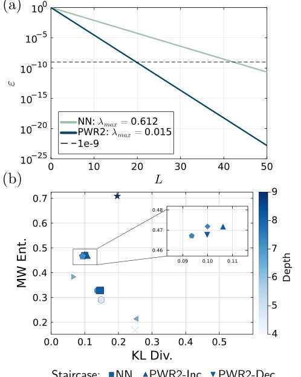
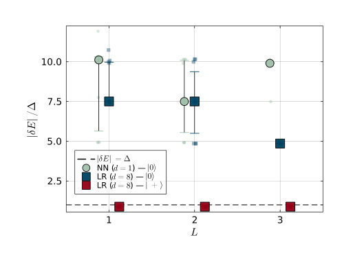
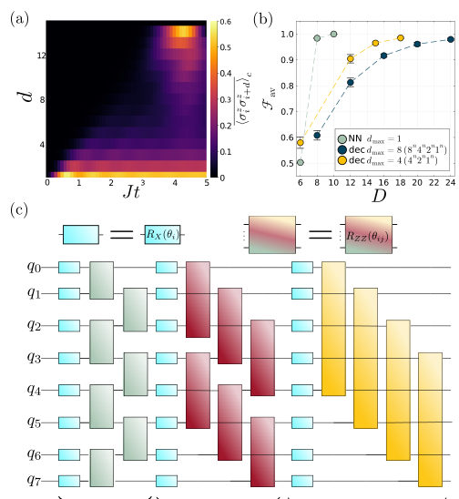
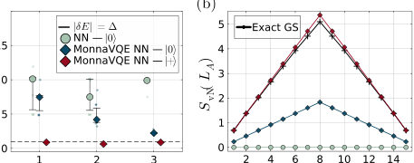
Summary. This paper rigorously analyzes how the physical connectivity of qubits impacts the performance of Variational Quantum Algorithms (VQAs). By comparing local versus structured long-range couplings (like PWR2), the authors show that specific geometries enhance the accessible operator space and improve VQE convergence. They conclude by proposing methods to effectively utilize these long-range interactions, making circuit geometry a key design parameter for quantum hardware.
Why it may be interesting. This work directly addresses hardware limitations by providing a quantitative framework for selecting optimal qubit connectivity patterns for variational quantum algorithms, which is crucial for scaling up trapped-ion or neutral-atom quantum simulators.
Main problem. The study investigates whether structured long-range connectivity provides a computational advantage for Variational Quantum Algorithms (VQAs) compared to standard local couplings.
Main result. Structured long-range coupling graphs, like the PWR2 graph, can offer an improved balance between circuit expressibility and depth for VQEs on systems like the TFIM. Furthermore, mapping hierarchical Hamiltonians to geometrically local ones via techniques like the Monna map is a viable optimization strategy.
Method. The authors employ advanced diagnostics including dynamical Lie-algebra analysis, approximate unitary-design measurements ($\lambda_G$), finite-depth measures of expressibility (KL divergence), and variational schemes for Hamiltonian mapping.
Model / system. The work models quantum systems using neutral atoms and trapped ions, which naturally support long-range entangling gates. The primary testbed is the Transverse-Field Ising Model (TFIM) solved via VQE, comparing Nearest Neighbor (NN), Power-of-Two (PWR2), and All-to-All (A2A) connectivity.
Key observables. Expressibility, entanglement capability (Meyer-Wallach entropy), commutator depth required to generate target algebras ($\mathfrak{so}(2n)$), and energy error $|\delta E|/\Delta$ in VQE simulations.
Important parameters / regimes. Circuit depth ($L$), connectivity graph structure (NN vs. PWR2), transverse field strength ($B/J$), and the size of the system ($n$).
Assumptions / limitations. The analysis assumes that circuit geometry and qubit reconfigurability are task-dependent resources for VQAs, though they caution that high expressibility does not guarantee trainability.
Figures summary. Figures compare coupling graphs (NN, PWR2, A2A), illustrate the Monna variational pipeline, show energy error vs. depth comparing NN and LR gates, and demonstrate mutual information localization after applying the Monna map.
Paper structure. The paper progresses by first establishing the physical motivation for long-range connectivity in trapped ion platforms. It then uses rigorous mathematical tools (Lie algebra analysis) to compare the algebraic reach of different graph structures. Finally, it validates these theoretical findings through numerical VQE simulations and proposes practical mapping techniques.
The performance of variational quantum algorithms depends in general on the structure of the parametrized quantum circuit, but the most common ansätze are typically based on local couplings. Motivated by the extended connectivity available with neutral atoms and trapped ions, we examine when structured long-range connectivity provides a useful resource, focusing on sparse power-of-two (PWR2) coupling graphs. Using dynamical Lie-algebra analysis, approximate unitary-design diagnostics, and finite-depth measures of expressibility and entanglement, we examine how these geometries enlarge the accessible operator space. This enlarged space alone is not sufficient to ensure trainability of the parameterized circuit for given target problems, and we explore performance across example problems with and without long-range coupling, identifying where sparse coupling graphs are or are not likely to provide an advantage. We also introduce a variational scheme that maps hierarchical long-range Hamiltonians to geometrically local ones that can be optimized with short-range circuits. Together, these results identify circuit geometry and qubit reconfigurability as task-dependent resources for variational algorithms, relevant to ongoing developments in quantum hardware with long-range connectivity.
Highlighted author(s): Susanne F. Yelin
Authors: Mariia Elovenkova, Hong-Ye Hu, Susanne F. Yelin
Type: theory · Category: quantum information and computing · PDF: https://arxiv.org/pdf/2607.07607v1
Analysis basis: full PDF text, analyzed in chunks
Topic relevance: 🔥 analog quantum simulation 4/5 · entanglement & information structure 2/5 · correlated / nonlocal dissipation 1/5 · correlated cavity matter 1/5 · driven-dissipative phase transition 1/5 · non-equilibrium dynamics 1/5
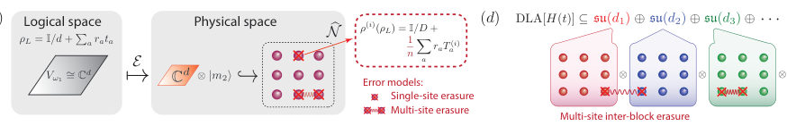
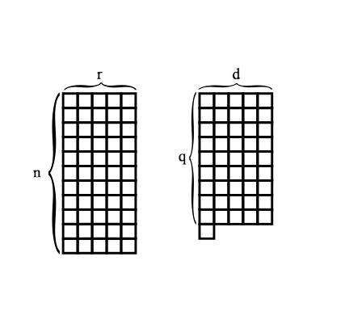
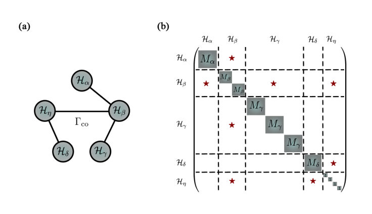
Summary. The paper develops a theoretical framework for creating highly robust quantum codes compatible with continuous symmetries to enable reliable analog quantum simulation. By constructing Covariant Approximate Quantum Codes, the authors overcome fundamental limitations imposed by theorems like Eastin-Knill. This methodology provides explicit building blocks for simulating complex dynamics while maintaining protection against local errors.
Why it may be interesting. This work directly addresses the intersection of quantum error correction and Hamiltonian simulation, which is crucial for building fault-tolerant quantum simulators. The explicit construction of non-Abelian covariant codes provides concrete tools for implementing complex dynamics robustly in physical platforms.
Main problem. The core problem is designing Quantum Error Correcting Codes (QECCs) that can maintain compatibility with continuous symmetries for robust analog quantum simulation, circumventing the Eastin-Knill theorem.
Main result. The authors construct explicit Covariant Approximate Quantum Codes (AQECCs) achieving near-optimal error scaling ($\Theta(1/N)$) for multi-qudit erasures and provide a framework to generate universal dynamics using symmetry-preserving Hamiltonians augmented by controlled symmetry-breaking terms.
Method. The approach combines quantum information theory concepts like reduced-state analysis with group representation theory, utilizing permutation symmetry to construct codes that embed logical operations transversally while maintaining covariance under the continuous symmetry group SU(d).
Model / system. The model is a general quantum system undergoing analog simulation governed by Hamiltonians. The framework uses an isometry $V$ embedding a logical space $\mathcal{H}_L$ into a physical space $\mathcal{H}_P$, and the analysis focuses on protecting against erasure noise and local errors.
Key observables. Purified-distance scaling ($\Theta(1/N)$), reduced state $ ho(S)( ho_L)$, and the connectivity of the coupling graph $\Gamma_{co}$.
Important parameters / regimes. The number of physical qubits ($N$), the degree of symmetry (e.g., SU(d)), and the type/number of local errors (single, two, or three-qudit erasures).
Assumptions / limitations. For universal control, it is assumed that adding controlled symmetry-breaking terms allows the generated Lie algebra to span the full symmetry algebra $\mathfrak{su}(H)$, provided graph connectivity and specific 'Full First-Factor Span' conditions are met.
Figures summary. Figure 1 illustrates the construction of covariant codes relating logical SU(d) action to physical transversal action, while Figure 3 schematically depicts the coupling graph $\Gamma_{co}$ used in the Lie algebra generation analysis.
Paper structure. The paper first addresses error correction by constructing AQECCs for continuous symmetries. It then extends this framework to analog dynamics, showing how symmetry-preserving Hamiltonians generate block-structured algebras, and finally details the necessary conditions (connectivity and span condition) using representation theory to ensure universal control.
Quantum error correction compatible with continuous symmetries is a fundamental problem in quantum information and a possible route to robust analog quantum simulation. Because the Eastin-Knill theorem forbids exact codes with continuous transversal symmetries, we construct explicit $SU(d)$-covariant approximate codes that exploit permutation symmetry to spread logical information uniformly across all physical subsystems. For one-, two-, and three-qudit erasures at known locations, we prove worst-case purified-distance scaling $Θ(1/N)$, matching approximate Eastin-Knill lower bounds up to constants, and we extend the reduced-state analysis to general flagged local noise. For single-qudit erasure, we construct an explicit near-optimal decoder from the Petz recovery map. We then use these codes as building blocks for encoded analog dynamics. Symmetry-preserving Hamiltonians generate block-structured dynamical Lie algebras implementable transversally, while controlled symmetry-breaking terms serve as non-transversal resources for universal dynamics. These results provide explicit non-Abelian covariant codes and a framework for robust analog quantum simulation.
Authors: Ali Fawaz, Sarath Raman Nair
Type: theory · Category: other · PDF: https://arxiv.org/pdf/2607.07124v1
Analysis basis: full PDF text, analyzed in chunks
Topic relevance: 🔥 spintronics-quantum-optics interface 5/5 · 🔥 QC/QI experiment 4/5 · 🔥 methods for driven-dissipative 4/5 · Keldysh / 2PI / non-Gaussian methods 3/5 · Tavis-Cummings & cavity-many-emitter 3/5 · driven-dissipative phase transition 3/5 · exotic spin models in light-matter 3/5 · quantum optics experiment 3/5 · analog quantum simulation 2/5 · correlated cavity matter 2/5 · non-equilibrium dynamics 2/5 · non-equilibrium universality 2/5 · quantum measurements 2/5 · superradiant laser 2/5 · correlated / nonlocal dissipation 1/5 · entanglement & information structure 1/5 · measurement-induced transitions 1/5
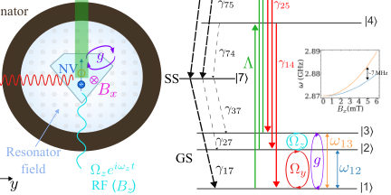
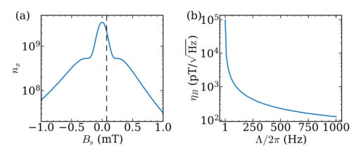
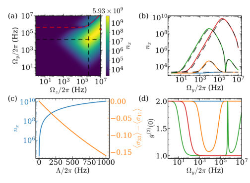
Summary. The paper details a theoretical model for an inversionless maser using NV spins in diamond at room temperature. By applying perpendicular magnetic fields and coupling the system to microwave resonators, they show that lasing can occur without population inversion. This technique enables highly sensitive magnetic field sensing with minimal external bias requirements.
Why it may be interesting. This work is highly relevant as it combines cavity QED principles with solid-state spin systems (NV centers), addressing open quantum system dynamics under strong coherent driving fields to achieve a practical quantum measurement device.
Main problem. The authors propose a method to create a room-temperature maser using nitrogen-vacancy (NV) spins in diamond without requiring population inversion.
Main result. They demonstrate that inversionless masing can be achieved, leading to a magnetic field sensing sensitivity on the order of 100 pT/sqrt(Hz).
Method. The analysis involves solving coupled differential equations for spin and cavity operators using quantum cumulants in the steady-state limit.
Model / system. The system is an ensemble of NV spins in diamond, modeled by a seven-level structure driven optically, via near-resonant microwave (MW) and radio-frequency (RF) fields, and coupled to a microwave resonator.
Key observables. Photon number ($n_x$), spin polarization ($\langle\hat{\sigma}_{ii} angle$), second-order coherence function ($g^{(2)}(0)$), and magnetic field sensitivity ($\eta_B$).
Important parameters / regimes. DC magnetic field of a few mT, MW/RF driving frequencies (e.g., $\Omega_y/2\pi \approx 10$ MHz), and cooperativity $C$.
Assumptions / limitations. The analysis uses weak correlation approximations and linear expansions in the small magnetic field deviation ($B_s$).
Figures summary. Figures illustrate the schematic setup, energy level diagrams, numerical results for photon number vs. driving parameters, and sensitivity plots showing improvements with second-order treatments.
Paper structure. The paper progresses from establishing the physical model (seven-level system) to deriving equations of motion using quantum cumulants, solving these equations in the steady state, and finally analyzing the resulting magnetic field sensing performance by optimizing driving detunings.
We propose a method to create a room-temperature maser operating at approximately 2.9~GHz frequency using an ensemble of negatively charged nitrogen-vacancy electronic spins (NV) in diamond, without requiring population inversion. Our method considers a DC magnetic field of a few milli-Tesla (mT) applied along the perpendicular direction of an ensemble of NV spins aligned along a common axis. This perpendicular magnetic-field creates superposition states of $|m_{\mathrm{s}}=-1\rangle$ and $|m_{\mathrm{s}}=+1\rangle$ of the NV spin's ground state triplet levels and thereby makes it possible to drive all three transitions in the NV spin ground state. We model the system by including optical pumping of the NV spins, near-resonant driving of two transitions, and coupling the third transition to a near-resonant microwave resonator. Numerical estimates using experimentally realizable parameters show that inversionless masing can be achieved inside the microwave resonator using our method. As an application, we show that the output intensity of an inversionless maser ($1.1\times10^{14}$ spins) can be used for magnetic field sensing with a DC sensitivity on the order of a hundred pT/$\sqrt{\mathrm{Hz}}$. Our study opens a new direction in room-temperature diamond NV maser devices for quantum technological applications without the requirement of a strong bias magnetic field, as in conventional NV diamond masers.
Authors: M. Lutsukh, M. Bazarsana, T. Begzjav, G. O. Ariunbold
Type: theory · Category: other · PDF: https://arxiv.org/pdf/2607.07701v1
Analysis basis: full PDF text, analyzed in chunks
Topic relevance: 🔥 Dicke superradiance 5/5 · 🔥 correlated / nonlocal dissipation 4/5 · 🔥 superradiant laser 4/5 · Tavis-Cummings & cavity-many-emitter 3/5 · correlated cavity matter 3/5 · driven-dissipative phase transition 3/5 · analog quantum simulation 2/5 · free-space correlated emission 2/5 · methods for driven-dissipative 2/5 · non-equilibrium dynamics 2/5 · non-equilibrium universality 2/5 · Keldysh / 2PI / non-Gaussian methods 1/5 · entanglement & information structure 1/5 · quantum measurements 1/5
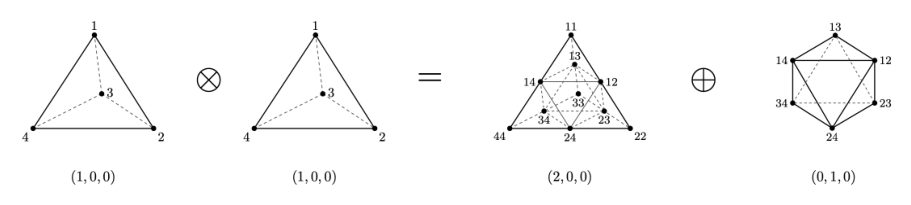
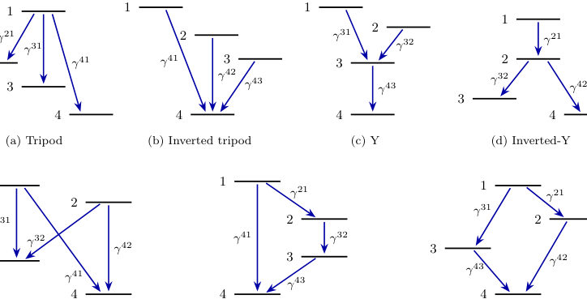
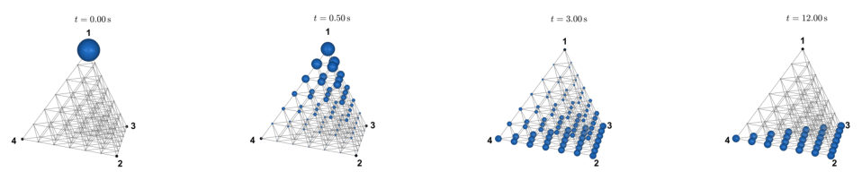
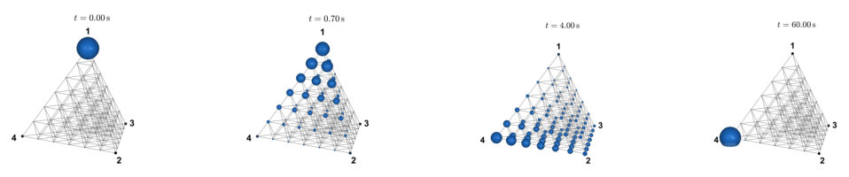
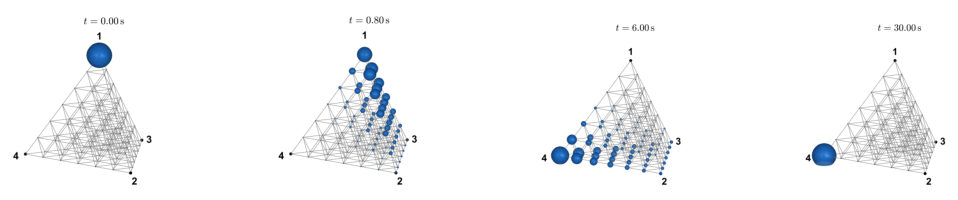
Summary. This paper unifies the theoretical description of collective spontaneous emission in four-level atomic ensembles using the mathematical framework of SU(4) symmetry. By solving derived Pauli rate equations for seven distinct physical topologies, the authors predict that the emitted light intensity will exhibit a delayed cooperative burst scaling superlinearly with atom number ($N^p$). This provides a comprehensive geometric and quantitative tool for studying multi-level quantum coherence.
Why it may be interesting. This work provides a powerful generalization of superradiance theory (Dicke/Agarwal) into higher symmetry groups (SU(4)), offering quantitative predictions for complex multi-level quantum emitters relevant to cavity QED and atomic physics experiments.
Main problem. The work develops a unified theoretical framework for modeling multi-channel collective spontaneous emission in atomic ensembles containing four internal energy levels.
Main result. The emitted intensity exhibits a delayed cooperative burst whose peak height scales superlinearly with the number of atoms ($I_{ ext{peak}} \propto N^p$ with $1.81 \lesssim p \lesssim 1.92$).
Method. The dynamics are derived by specializing Agarwal's multi-level formalism to the four-level case, utilizing the fully symmetric irreducible representation of SU(4) and solving resulting Pauli-type rate equations numerically.
Model / system. The system consists of $N$ identical atoms with a four-level structure ($\mathcal{H}_1 \cong \mathbb{C}^4$). The collective dynamics are mapped onto the fully symmetric representation $(N, 0, 0)$ of SU(4), whose weight space forms a tetrahedral lattice.
Key observables. Total emitted intensity $I(t)$, peak emitted intensity ($I_{ ext{peak}}$), and time evolution of level populations $\langle q_k(t) angle/N$.
Important parameters / regimes. Atom number $N$ (up to 50); seven specific dipole-allowed four-level topologies (e.g., tripod, Y, diamond).
Assumptions / limitations. The dynamics are governed by the diagonal part of the master equation, allowing for a closed Pauli-type rate equation description.
Figures summary. Figures illustrate $I(t)$ for various topologies at different $N$, confirm power-law scaling of $I_{ ext{peak}}$ vs $N^2$, and show normalized population dynamics across the seven studied configurations.
Paper structure. The paper establishes the SU(4) mathematical framework, derives the compact Pauli rate equation from the master equation, specializes this formalism to seven physical four-level topologies, solves these equations numerically for various N, and analyzes the resulting power-law scaling of the emitted intensity burst.
We specialize Agarwal's multi-level collective spontaneous-emission formalism to the four-level case by formulating it in the fully symmetric \SU(4) representation of $N$ identical atoms. In the irreducible representation $(N,0,0)$, the occupation-number basis forms a tetrahedral weight lattice on which the six embedded $\mathfrak{su}(2)$ transition subalgebras act as ladder operators. From these algebraic factors we obtain a compact Pauli-type population-rate equation and a closed-form expression for the total emitted intensity that apply to any combination of open dipole channels. The formalism is then specialized to the seven dipole-allowed four-level topologies -- tripod, inverted tripod, Y, inverted Y, double-$Λ$, closed cascade, and diamond -- and the resulting rate equations are solved numerically for atom numbers up to $N=50$. In every case the emitted intensity develops a delayed cooperative burst whose peak height obeys a power law $I_{\mathrm{peak}}=aN^{p}$ with topology-dependent parameters $(a,p)$; the fitted exponents lie in the range $1.81\lesssim p\lesssim 1.92$, indicating a superlinear. The \SU(4) tetrahedral flow and the seven configuration-dependent transients together provide a unified geometric picture of multi-channel collective dissipation in four-level atomic ensembles.
Authors: Beatrice Magni, Federico Gerbino, Xhek Turkeshi, Andrea De Luca
Type: theory · Category: statistical mechanics · PDF: https://arxiv.org/pdf/2607.06683v1
Analysis basis: full PDF text, analyzed in chunks
Topic relevance: 🔥 measurement-induced transitions 5/5 · 🔥 entanglement & information structure 4/5 · 🔥 non-equilibrium universality 4/5 · correlated / nonlocal dissipation 3/5 · driven-dissipative phase transition 3/5 · methods for driven-dissipative 3/5 · non-equilibrium dynamics 3/5 · Keldysh / 2PI / non-Gaussian methods 2/5 · quantum measurements 2/5 · scars & prethermalization 1/5
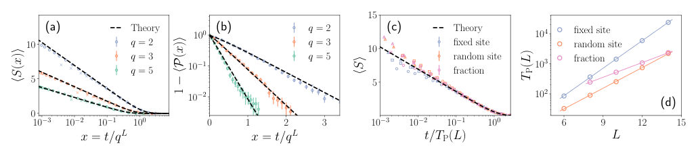
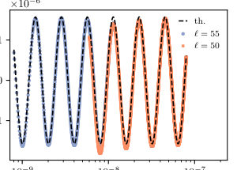
Summary. This work analyzes the purification of monitored Clifford circuits by showing the dynamics simplify dramatically compared to generic systems. The process reduces to a pure-death Markov chain whose scaling functions are universal and exactly solvable. This bypasses complex mathematical machinery like the replica trick, offering deep insights into quantum information decay rates.
Why it may be interesting. The finding that a complex quantum process simplifies to an exactly solvable classical death process is highly valuable for understanding non-equilibrium dynamics in open quantum systems, providing concrete analytical tools beyond standard replica methods.
Main problem. The paper investigates the universal dynamics of quantum state purification for monitored Clifford circuits, aiming to bypass complex mathematical tools like the replica trick.
Main result. For these specific circuits, purification reduces to an exactly solvable death process governing the decay of the density matrix rank, leading to universal scaling functions for Rényi entropies.
Method. The analysis maps the dynamics onto a pure-death Markov process and uses techniques involving moment generating functions, Laplace transforms, and analyzing periodic modulations in the scaling limit.
Model / system. The system is monitored quantum many-body dynamics on Clifford circuits acting on L qudits of prime dimension q. The evolution involves alternating unitary steps (random Clifford elements) and projective measurements of Pauli strings.
Key observables. Rényi entropies ($\langle S(x) angle$), purity ($\langle P(x) angle$), the decay rate of the density-matrix rank, entropy fluctuations, and temporal modulations periodic in $\log_q x$.
Important parameters / regimes. The purification time $T_P$ (exponentially long), the scaled time $x = t/T_P$, and the qudit dimension $q$ (especially prime dimensions).
Assumptions / limitations. The analysis relies on taking specific scaling limits ($L o \infty, x o 0$) and comparing results derived from integer moments versus analytic continuation methods.
Figures summary. Figures illustrate the data collapse of $\langle S(x) angle$ and $1 - \langle P(x) angle$ onto universal curves for various qudit dimensions ($q=2, 3, 5$), and show log-periodic modulations in entropy.
Paper structure. The paper progresses by first establishing the reduction to a death process (Chunk 1), deriving the master equation and solving it via moment generating functions (Chunk 2), then analyzing the fine structure of the small-$x$ limit, including log-periodicity (Chunk 3), and finally rigorously characterizing the variance and moments in the $q o \infty$ limit (Chunk 4).
Quantum circuits under sufficiently weak monitoring purify on a timescale $T_P$ exponentially long in the system size. This slowness underlies a universal purification dynamics, whose quantitative description has so far required the replica trick, with a delicate analytic continuation. We show that monitored Clifford circuits on $L$ qudits of prime dimension $q$ bypass this construction entirely: in the scaling limit at fixed $x = t/T_P(L)$, purification reduces to the Markovian decay of the density-matrix rank, an exactly solvable death process descending from infinity. We compute the full scaling functions in compact form: all Rényi entropies collapse onto a universal curve $\langle S(x) \rangle$. Exact stabilizer simulations at $q=2,3,5$ confirm the predictions, with no fitting parameter for the global model and $T_P$ as the only fitted scale for local brick-wall circuits. Also, the replica problem amounts to a tilted version of the same Markov process, in agreement with exact computations from the Clifford commutant. Finally, the quantization of the rank leaves two hallmarks that distinguish Clifford dynamics from generic monitored circuits: the entropy fluctuations saturate at short scaled times $x\to0$ to an $O(1)$ variance, instead of vanishing, and observables develop a temporal modulation periodic in $\log_q x$, which cannot be captured by the replica approach.
Authors: Stephen Whitelam, Sergio Ciliberto, Ludovic Bellon
Type: theory · Category: statistical mechanics · PDF: https://arxiv.org/pdf/2607.06822v1
Analysis basis: full PDF text, analyzed in chunks
Topic relevance: 🔥 quantum measurements 5/5 · 🔥 measurement-induced transitions 4/5 · driven-dissipative phase transition 3/5 · methods for driven-dissipative 3/5 · non-equilibrium dynamics 3/5 · non-equilibrium universality 2/5 · Frenkel-Kontorova 1/5 · Keldysh / 2PI / non-Gaussian methods 1/5 · correlated / nonlocal dissipation 1/5
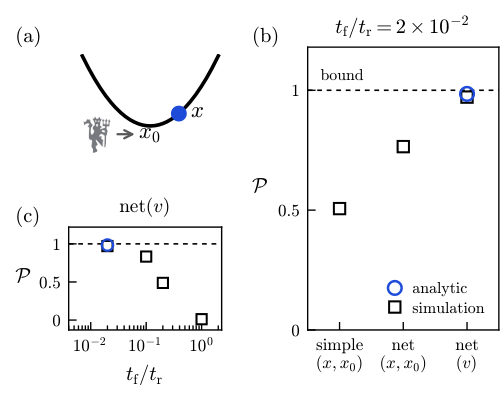
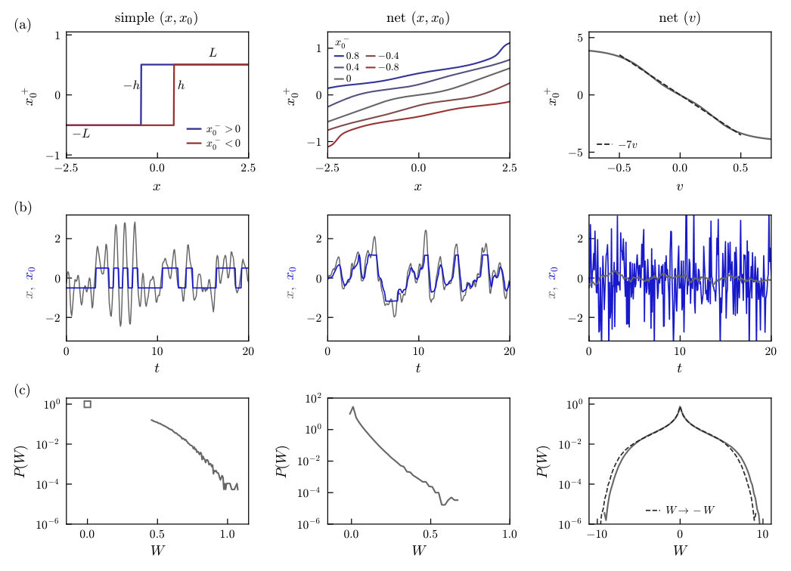
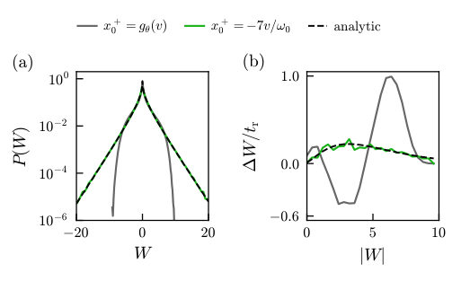
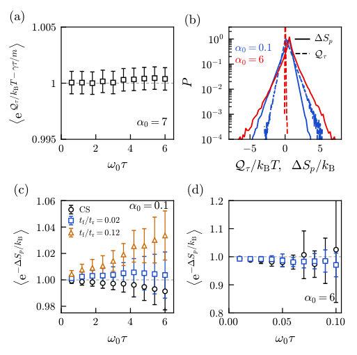
Summary. This work uses a neural network to train a Maxwell's demon on an underdamped oscillator, aiming to maximize extracted work from thermal noise. The NN discovers that the optimal control strategy corresponds physically to 'cold damping,' effectively cooling the system and achieving near-maximum theoretical power extraction. This demonstrates how ML can uncover fundamental physical principles governing energy harvesting.
Why it may be interesting. It provides a concrete example where machine learning can reveal deep underlying physics—the specific cooling mechanism (cold damping)—governing non-equilibrium energy conversion in mesoscopic systems.
Main problem. The study investigates how a neural-network controlled Maxwell's demon can optimally extract work from thermal fluctuations in an underdamped mechanical oscillator.
Main result. The optimal strategy discovered by the NN, which uses velocity as input, implements 'cold damping,' achieving near-theoretical limits of work extraction and effectively cooling the system below ambient temperature.
Method. The authors trained a neural network to learn feedback control protocols that adjust an external harmonic trap position ($x_0$) based on system measurements (position or velocity).
Model / system. The model is an underdamped micromechanical cantilever subjected to thermal noise, governed by the Langevin equation. The work extraction process involves periodic feedback updates.
Key observables. Average extracted power ($\langle P angle$), effective damping coefficient ($\gamma_{eff}$), effective temperature ($T_{eff}$), and satisfaction of fluctuation theorems (e.g., IFT for heat current).
Important parameters / regimes. The theoretical upper bound on extractable power ($k_B T / t_r$) and the feedback time interval ($\Delta t_f$).
Assumptions / limitations. Key approximations include linearizing the optimal feedback force ($x_0 \approx -\alpha v$) for analytical progress, and assuming periodic feedback updates at fixed intervals.
Figures summary. Figures compare extracted power across different protocols (position vs. velocity input) against theoretical bounds; others show work distributions and verify fluctuation theorems like IFTs for heat current and entropy production.
Paper structure. The paper progresses by first establishing the problem of optimal work extraction, comparing simple vs. NN-derived protocols, identifying the physical mechanism as cold damping when using velocity input, and finally verifying these results by checking consistency with stochastic fluctuation theorems under finite feedback time.
We train a neural-network Maxwell's demon to extract work from a model of an underdamped micromechanical cantilever subject to thermal noise. The demon, which periodically adjusts the position of a harmonic trap, is trained to maximize the power extracted under steady-state operation. When the demon is given the cantilever position and trap position as inputs it learns a refined version of an existing hand-designed protocol, yielding a substantial improvement in performance. When the demon receives the oscillator velocity as input it discovers a qualitatively different strategy that extracts substantially more work, close to the theoretical power bound. Analysis of the protocol shows that it implements {\em cold damping}: the trap position is displaced approximately linearly with velocity, producing an effective increase of the oscillator's damping coefficient and a reduction of its effective temperature. Thus a neural-network Maxwell's demon rediscovers a well-known cooling strategy from optomechanics, revealing a simple physical mechanism underlying near-optimal work extraction from thermal fluctuations in an underdamped system.
Authors: Xiao-Feng Shi
Type: experiment · Category: other · PDF: https://arxiv.org/pdf/2607.07167v1
Analysis basis: full PDF text, analyzed in chunks
Topic relevance: 🔥 Rydberg arrays 5/5 · 🔥 analog quantum simulation 4/5 · QC/QI experiment 3/5 · entanglement & information structure 3/5 · quantum measurements 2/5 · quantum optics experiment 2/5 · correlated / nonlocal dissipation 1/5 · correlated cavity matter 1/5 · non-equilibrium dynamics 1/5
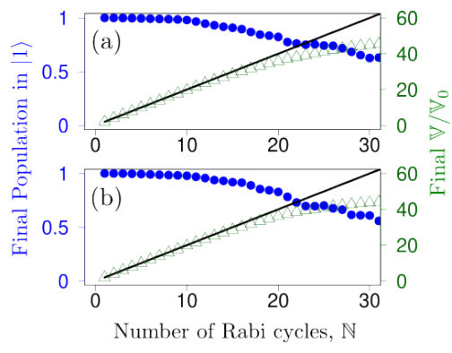
Summary. This paper reports a method to generate position-position entangled states between two spatially separated neutral atoms. The technique relies on exploiting photon recoil during Rydberg excitation, which imparts a measurable momentum kick leading to macroscopic separation ($\ell$). This work advances the use of atomic arrays for quantum state engineering beyond internal qubit degrees of freedom.
Why it may be interesting. This work directly addresses creating macroscopic quantum correlations (position entanglement) using established AMO tools (Rydberg blockade), pushing the boundaries from internal-state qubits to spatial degrees of freedom in cold atom systems.
Main problem. The primary goal is generating macroscopic entanglement between two spatially separated neutral atoms.
Main result. The authors successfully demonstrate the deterministic generation of position-position entangled states between two atoms, with separations reaching the micron scale via photon recoil during Rydberg excitation.
Method. The process utilizes controlled Rydberg blockade interactions in two separate atoms to induce a momentum kick on one atom. This kick translates into measurable spatial separation after free flight and subsequent recapture by optical traps.
Model / system. The system involves two spatially separated neutral atoms (e.g., Rubidium) trapped in optical tweezers, leveraging the strong, state-dependent interactions mediated by Rydberg excitation. The dynamics are governed by time-dependent Hamiltonians incorporating blockade potentials and photon recoil momentum kicks.
Key observables. Position separation ($\ell$), Entanglement Fidelity ($F$), Population Restoration ($p(t)$), and the resulting entangled state $|\Psi_{ct} angle$.
Important parameters / regimes. The achievable position separation $\ell$ can reach several microns, with enhancements possible using lighter atoms like ${^3 ext{He}^*}$. The process efficiency is limited by internal state coherence time ($T_1$).
Assumptions / limitations. Key assumptions include the unit efficiency of recapturing the atomic wavepacket and analyzing the impact of Doppler dephasing and Rydberg-state decay.
Figures summary. Not specified in the notes, but the context implies figures showing entanglement fidelity vs. time/cycles, and position distributions demonstrating spatial separation.
Paper structure. The paper details the physical mechanism involving Rydberg blockade to generate momentum kicks, analyzes the resulting entangled state evolution over free flight time $T$, discusses enhancements via multiple Rabi cycles ($N$), and evaluates performance against decoherence sources like Doppler effects.
Entanglement between two spatially separate matter particles can be generated via many means and often resides in the internal states of particles. Here, via Rydberg blockade in two spatially separate neutral atoms, we find that the photon recoil in Rydberg excitation can push one atom microns away provided the other atom exerts a state-dependent Rydberg-mediated blockade. When the atoms are recaptured by optical traps, a position-position entangled state between two spatially separate atoms can emerge. This realizes a Bell state of two atoms, where the entanglement exists in the position of each atom and the distance between the two possible locations of each atom can be in the hundred-micron regime.
Authors: Jin-Kang Guo, Jin-Lei Wu, Chuan-Cun Shu
Type: theory · Category: other · PDF: https://arxiv.org/pdf/2607.07223v1
Analysis basis: full PDF text, analyzed in chunks
Topic relevance: 🔥 Rydberg arrays 5/5 · 🔥 analog quantum simulation 4/5 · methods for driven-dissipative 3/5 · non-equilibrium dynamics 3/5 · driven-dissipative phase transition 2/5 · Keldysh / 2PI / non-Gaussian methods 1/5 · correlated / nonlocal dissipation 1/5 · entanglement & information structure 1/5 · non-equilibrium universality 1/5
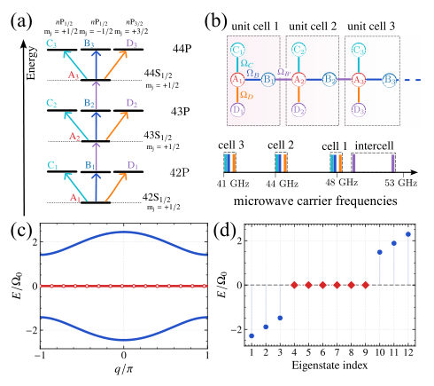
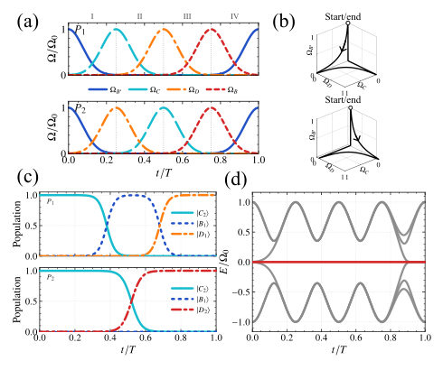
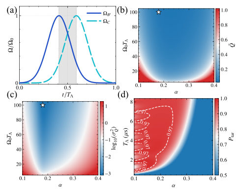
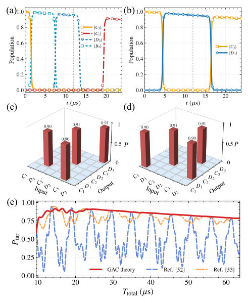
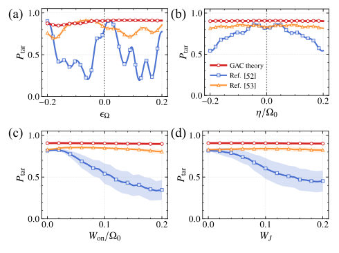
Summary. The research demonstrates non-Abelian Thouless pumping using Rydberg synthetic lattices to realize order-dependent quantum operations. A novel Global Adiabatic Criterion (GAC) is introduced to optimize the relative timing of microwave pulses, significantly improving target state fidelity in finite time compared to existing methods. This work advances geometric control and holonomic computation in solid-state analogues.
Why it may be interesting. This work directly tackles the practical limitations of adiabatic quantum control by providing a rigorous criterion (GAC) for optimizing pulse timing in complex open systems like Rydberg arrays, which is crucial for realizing robust topological quantum gates.
Main problem. The paper addresses the challenge of implementing non-Abelian Thouless pumping, which is sensitive to operation order, while mitigating leakage errors inherent in finite-time quantum evolution.
Main result. The proposed Global Adiabatic Criterion (GAC) for pulse timing successfully guides the system to achieve higher target-state populations compared to literature schedules, confirming robust non-Abelian behavior.
Method. The authors derive and apply a GAC based on bounding the nonadiabatic transition probability ($\epsilon$) using time-integrated nonadiabatic factors ($Q$ and $\sigma_Q^2$). Dynamics are simulated via the Lindblad master equation.
Model / system. The system utilizes Rydberg synthetic lattices, encoding a three-cell Lieb lattice structure within microwave-coupled Rydberg levels. The dynamics are confined to a six-dimensional zero-energy subspace for pumping operations.
Key observables. Projected output state (sensitive to operation order), target-state population ($P_{tar}$), and the nonadiabatic transition probability ($\epsilon$).
Important parameters / regimes. The relative timing of Gaussian microwave pulses, which is optimized by the GAC; finite evolution time $T$.
Assumptions / limitations. The GAC provides a conservative upper bound on leakage, neglecting potential phase cancellations. The simulation incorporates state-dependent Rydberg loss.
Figures summary. Figures illustrate the lattice structure and zero-energy subspace (Fig. 1); show Gaussian pulse sequences for two pumping cycles ($P_1, P_2$) with different temporal orders (Fig. 2); detail the GAC derivation using nonadiabatic factors $Q$ and $\sigma^2_Q$ (Fig. 3); and compare time-resolved populations showing order dependence (Fig. 4).
Paper structure. The paper first establishes the physical model (Rydberg lattice, zero-energy subspace) and the pumping mechanism. It then introduces the GAC theory to manage finite-time leakage. Finally, it simulates the full dynamics using the Lindblad equation, comparing GAC-optimized schedules against standard ones.
We study a quantum implementation of non-Abelian Thouless pumping in Lieb lattices using Rydberg synthetic dimensions. The lattice is encoded in twelve selected microwave-coupled Rydberg levels, forming a three-cell structure with six degenerate zero-energy states. These zero-energy states define the working subspace for cyclic modulation of the microwave couplings, while the remaining bright states provide the dominant leakage channels at finite evolution time. To choose the relative timing of the Gaussian pulses, we introduce a global adiabatic criterion (GAC), which evaluates the mean value and temporal fluctuation of a nonadiabatic factor obtained from a representative $Λ$-type transfer paradigm. With the resulting timing applied to the full twelve-level pumping dynamics, composing two elementary pumping cycles in opposite temporal orders produces distinct projected population maps. It is exactly consistent with noncommuting matrix-valued adiabatic operations in the zero-energy subspace. We numerically simulate the non-Abelian Thouless pumping using the Lindblad master equation with state-dependent Rydberg loss and representative perturbations. The results show that the GAC-selected timing within the same Gaussian pulse family gives higher target-state population than two literature-adapted Gaussian pulse schedules over the simulated parameter ranges. This quantum implementation of non-Abelian Thouless pumping, enabled by the GAC, marks a major milestone in finite-time geometric control and paves the way for transformative applications in holonomic quantum computing with Rydberg synthetic lattices.
Authors: Wenjie Zhong, Yubao Liu, Yanbei Chen, Haixing Miao, Yiqiu Ma
Type: theory · Category: other · PDF: https://arxiv.org/pdf/2607.06967v1
Analysis basis: full PDF text, analyzed in chunks
Topic relevance: 🔥 quantum measurements 5/5 · 🔥 measurement-induced transitions 4/5 · methods for driven-dissipative 3/5 · quantum optics experiment 3/5 · non-equilibrium dynamics 2/5 · Keldysh / 2PI / non-Gaussian methods 1/5 · correlated / nonlocal dissipation 1/5 · driven-dissipative phase transition 1/5
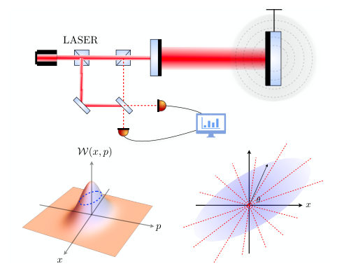
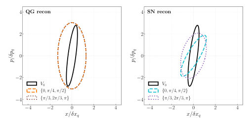
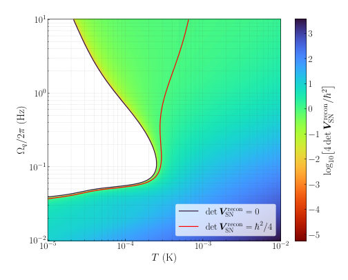
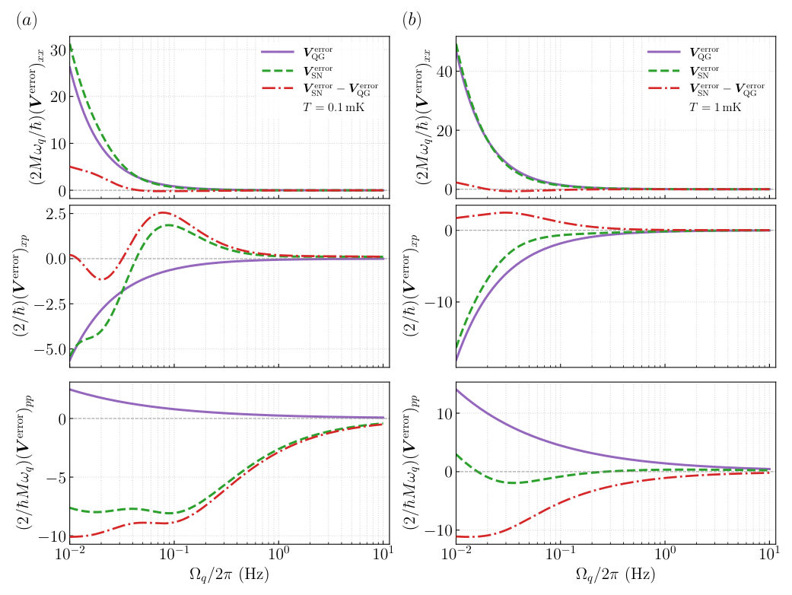
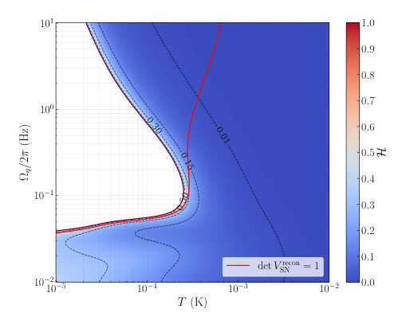
Summary. The paper investigates how classical self-gravity modifies the measurement process for a macroscopic quantum oscillator compared to standard quantum mechanics. By comparing state reconstructions derived from both theories using continuous tomography data, the authors show that the model mismatch leads to observable signatures, such as violating fundamental uncertainty bounds when using the wrong reconstruction map.
Why it may be interesting. This is highly relevant as it tackles fundamental questions about the nature of gravity at the quantum level, utilizing advanced techniques from open quantum systems theory (continuous monitoring) to probe deviations from standard QM predictions.
Main problem. The work aims to distinguish between quantum gravity (QG) effects and classical self-gravity (Schrödinger-Newton, SN theory) when performing continuous quantum state tomography on a macroscopic mechanical oscillator.
Main result. Applying the standard QG reconstruction map to data generated under SN dynamics introduces model-dependent corrections that can cause the reconstructed covariance to violate the Heisenberg uncertainty principle or become dependent on the chosen measurement angles.
Method. The authors compare quantum state reconstructions derived from two different dynamical models (QG vs. SN) by deliberately applying the QG reconstruction filter to SN-generated measurement records, quantifying the mismatch using the Hellinger distance.
Model / system. The system is a macroscopic optomechanical oscillator whose dynamics are modeled under both standard quantum mechanics and Schrödinger-Newton theory, which incorporates state-dependent self-gravity into the Hamiltonian. Measurement occurs via continuous homodyne detection of an output optical field.
Key observables. Reconstructed covariance matrix, Hellinger distance quantifying distinguishability, and quadrature variance ($\sigma^2_{YY}$).
Important parameters / regimes. Measurement strength, temperature, and the specific choice of tomography angles.
Assumptions / limitations. The analysis relies on deliberately using the QG reconstruction map as a fixed filter to expose model incompatibility between the two theories.
Figures summary. Figure 1 illustrates the process: continuous encoding of mirror displacement into an outgoing optical field read out via variable-angle homodyne detection, providing noisy projections of the mechanical phase-space distribution.
Paper structure. The paper establishes the physical setup (optomechanics), details the dynamics under both QG and SN theories, develops the measurement formalism using continuous quantum state tomography, and concludes by comparing the reconstruction results to highlight model discrepancies.
Macroscopic optomechanical systems offer a promising testbed for distinguishing whether gravity acts as a quantum interaction or as a classical field. Schrodinger-Newton (SN) theory is the nonrelativistic limit of semi-classical gravity where quantum matter couples to classical gravity. Based on SN theory, this work investigates how classical self-gravity affects continuous quantum state tomography of a macroscopic mechanical oscillator monitored by variable-angle homodyne detection. In the Schrodinger-Newton (SN) theory, the measurement record arises from a different conditional test mass dynamics from that in quantum-gravity (QG)/standard quantum mechanics, consequently, applying the QG-optimised reconstruction map introduces an additional state-dependent contribution. We show that this contribution makes the reconstructed covariance depend on the chosen set of tomography angles and can drive the SN covariance--after QG filtering--outside the standard Gaussian-covariance domain set by the Heisenberg uncertainty principle. We quantify the resulting QG-SN distinguishability via the Hellinger distance and analyse its dependence on measurement strength and temperature. We then formulate the same issue in the broader setting of nonlinear quantum mechanics: when the system's conditional dynamics during the readout process depends on the state being inferred, the tomographic map acquires nonlinear, model-dependent corrections to the usual Radon or Gaussian reconstruction map.
Authors: N. Vera, F. M. Quinteros, P. Barberis-Blostein, P. Solano
Type: theory · Category: other · PDF: https://arxiv.org/pdf/2607.06888v1
Analysis basis: full PDF text, analyzed in chunks
Topic relevance: 🔥 analog quantum simulation 4/5 · 🔥 correlated / nonlocal dissipation 4/5 · Tavis-Cummings & cavity-many-emitter 3/5 · correlated cavity matter 3/5 · driven-dissipative phase transition 3/5 · methods for driven-dissipative 3/5 · non-equilibrium dynamics 3/5 · Keldysh / 2PI / non-Gaussian methods 2/5 · non-equilibrium universality 2/5 · entanglement & information structure 1/5 · exotic spin models in light-matter 1/5 · scars & prethermalization 1/5
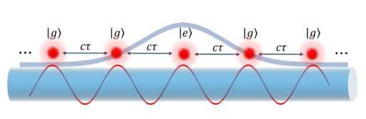
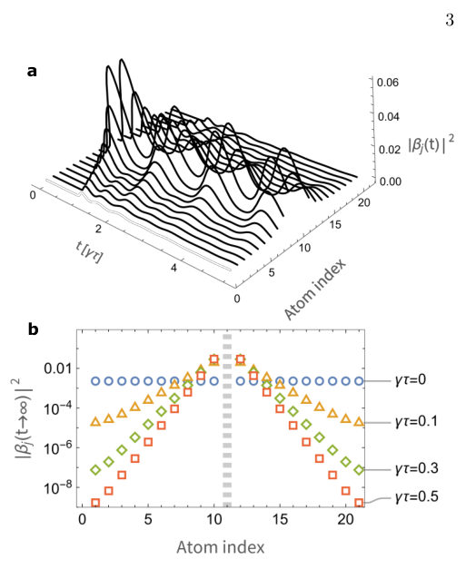
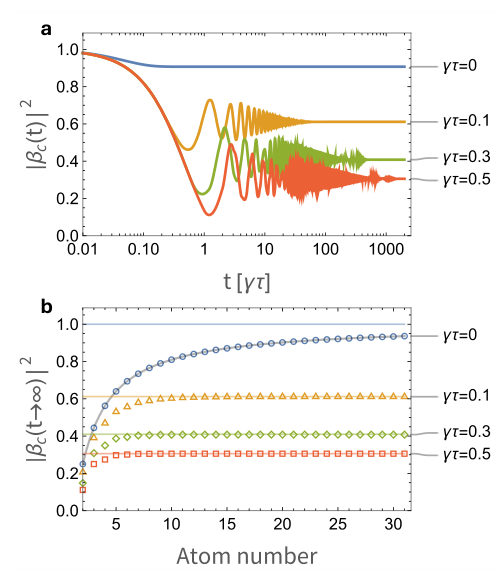
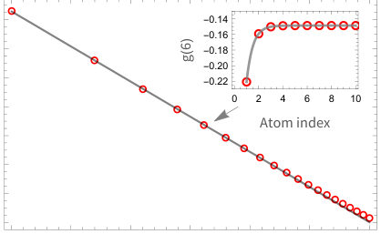
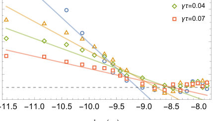
Summary. This paper analyzes excitation dynamics in an atomic array coupled to a waveguide when interactions are delayed (non-Markovian). The key finding is that this delay causes the initially spread excitation to partially localize near the source atom. This localization effect suppresses long-range quantum correlations, with the correlation length scaling inversely with the square root of the interaction delay.
Why it may be interesting. This work is highly relevant as it explores how retardation effects fundamentally alter quantum transport and coherence preservation in solid-state or waveguide QED systems, providing quantitative scaling laws for correlation decay.
Main problem. The study investigates how delayed, non-Markovian interactions affect the atom-atom correlation length within an array of atoms coupled to a waveguide under Bragg conditions.
Main result. Increased interaction delay causes the excitation probability to localize near the initially excited atom, leading to a power-law decrease in the correlation length ($\xi \propto au^{-1/2}$).
Method. The authors solve the system dynamics by deriving and numerically solving complex delay differential equations governing the atomic coefficients.
Model / system. The model is an array of N atoms coupled to a one-dimensional waveguide (wQED) operating in the single-excitation manifold under Bragg conditions. The interactions are non-Markovian due to finite photon propagation time ($ au$).
Key observables. Atom-atom correlation length ($\xi$), steady-state excitation probability of central vs. neighboring atoms, and spin-spin correlation function $g(j)$.
Important parameters / regimes. Interaction delay ($ au$ or $\gamma au$), system size (N), disorder strength ($\sigma$), and the Bragg condition.
Assumptions / limitations. The analysis is restricted to the single-excitation manifold, and derivations rely on approximations like extending frequency integration over negative frequencies in the RWA for the delay equation.
Figures summary. Figures illustrate schematic setups under Bragg conditions, decay dynamics of excitation probability vs. atom index for varying delays, and log-log plots showing power-law scaling relationships between $\xi$ and both delay ($\gamma au$) and disorder ($\sigma$).
Paper structure. The paper progresses from defining the physical system and Hamiltonian to deriving the governing delay differential equations (avoiding Born-Markov), analyzing the Markovian limit, and finally solving for the steady-state localization properties in the non-Markovian regime, including disorder effects.
We study the atom-atom correlation length in an atomic array coupled to a waveguide under the Bragg condition with delayed non-Markovian interactions caused by a finite photon propagation time. Starting from a single excited atom, the excitation partially spreads among all atoms, reaching a steady state. The remaining excitation localizes near the initially excited atom, and the atom-atom correlation length decreases as a power law with the interaction delay. This localization phenomenon reveals how the delay-induced non-Markovian behavior affects the correlation transport in waveguide QED systems.
Authors: Bashir Mojaveri, Rasoul Jafarzadeh Bahrbeig, Mohammad Ali Fasihi, Nasrin Abdi
Type: theory · Category: other · PDF: https://arxiv.org/pdf/2607.06837v1
Analysis basis: full PDF text, analyzed in chunks
Topic relevance: 🔥 methods for driven-dissipative 4/5 · correlated / nonlocal dissipation 3/5 · correlated cavity matter 3/5 · driven-dissipative phase transition 3/5 · entanglement & information structure 3/5 · non-equilibrium dynamics 3/5 · Keldysh / 2PI / non-Gaussian methods 2/5 · analog quantum simulation 2/5 · non-equilibrium universality 2/5 · Tavis-Cummings & cavity-many-emitter 1/5 · exotic spin models in light-matter 1/5 · scars & prethermalization 1/5
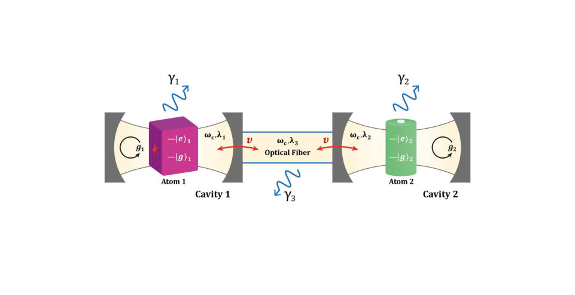
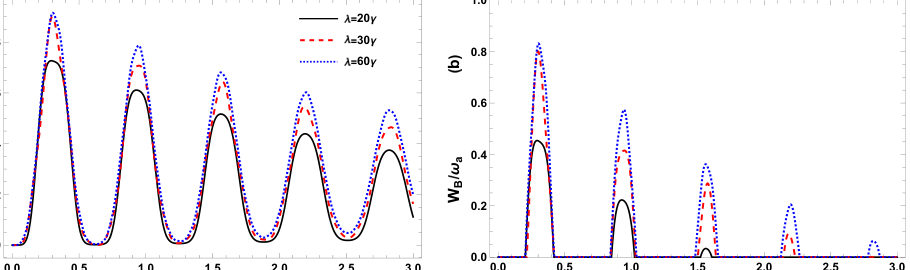
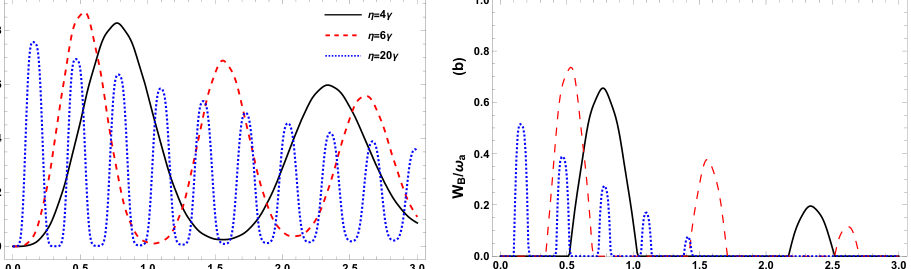
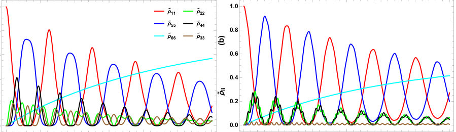
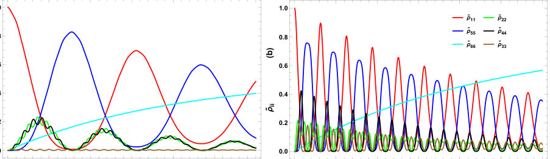
Summary. The paper presents a novel protocol for remotely charging a quantum battery using entanglement assistance across two cavities connected by an optical fiber. By employing parity deformation of the cavity fields, the researchers suppress environmental dissipation while demonstrating that initial entanglement acts as a consumable resource to maximize stored energy. This offers new insights into harnessing decoherence effects in quantum thermodynamics.
Why it may be interesting. This work directly addresses advanced topics in open quantum systems, specifically leveraging non-standard algebraic structures (para-Bose algebra) to control decoherence and enhance energy transfer—a critical area in quantum thermodynamics and cavity QED.
Main problem. The work proposes a protocol for entanglement-assisted remote energy transfer between two distant atoms (charger and battery) coupled to separate optical cavities.
Main result. High-efficiency charging is achieved by introducing parity deformation of the cavity fields, which suppresses dissipation. Furthermore, initial charger-battery entanglement is shown to be a consumable resource necessary to maintain increased stored energy in the battery.
Method. The analysis uses the para-Bose algebra formalism and solves the open system dynamics governed by a Markovian master equation under Born-Markov approximations.
Model / system. The physical model consists of two distant two-level atoms, each coupled to an optical cavity, with the cavities linked by a fiber. The entire setup is treated as an open quantum system interacting with bosonic reservoirs (baths).
Key observables. Energy Transfer Efficiency, Stored Energy ($\Delta E_B$), Extractable Work (Ergotropy), and the degree of entanglement.
Important parameters / regimes. Parity Deformation Parameter ($ u$), coupling strengths ($\lambda$), and damping rates ($\gamma$).
Assumptions / limitations. The analysis relies on the short fiber limit, the Born-Markov approximation, and the use of the para-Bose algebra to model cavity field interactions.
Figures summary. Figure 1 schematically illustrates the remote battery charging setup. Figure 2 shows normalized dynamics of stored energy ($\Delta E_B$) and ergotropy ($W_B$) over time for varying coupling strengths.
Paper structure. The paper introduces the physical system, develops the Hamiltonian using parity-deformed fields, derives the master equation, solves the resulting differential equations for key observables, and finally analyzes how entanglement consumption drives enhanced energy storage.
Currently, remote energy transfer and immunity to dissipation are hot topics in quantum batteries (QBs). In this work, we propose a protocol to realize energy transfer between two remote atoms (a quantum charger and a quantum battery) each coupled to a separate optical cavity with the cavities connected by a fiber. The cavities and fiber are coupled to their individual baths. After optimizing inter-system couplings to achieve an efficient transfer, we uncover the effect of suppressing dissipation by introducing parity deformation of the cavities fields. We also prove that the charger-battery entanglement is a consumable resource for energy storage: it is initially stored until the charger and battery reach energy balance, and then subsequently consumed to maintain the increase in energy stored in the battery. The present scheme is the first execution of energy transfer to a distant battery assisted by entanglement, which may help better understand quantum thermodynamics and open new possibilities toward harnessing decoherence as a resource to improve the charging performance of QBs.
Authors: Yi-An Wang, Kun Ding, Linhu Li
Type: theory · Category: quantum gases · PDF: https://arxiv.org/pdf/2607.06934v1
Analysis basis: full PDF text, analyzed in chunks
Topic relevance: 🔥 analog quantum simulation 4/5 · 🔥 driven-dissipative phase transition 4/5 · correlated / nonlocal dissipation 3/5 · methods for driven-dissipative 3/5 · non-equilibrium universality 3/5 · Kondo & dissipative impurity 2/5 · non-equilibrium dynamics 2/5 · Frenkel-Kontorova 1/5 · Keldysh / 2PI / non-Gaussian methods 1/5 · entanglement & information structure 1/5
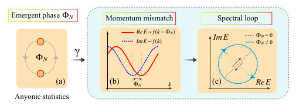
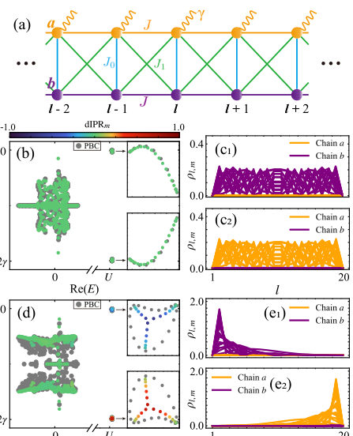
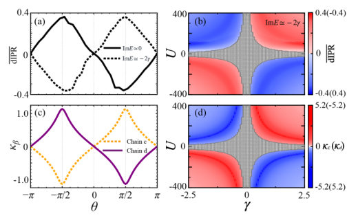
Summary. The paper demonstrates that the fractional exchange statistics of anyons can act as a resource to activate non-trivial non-Hermitian topology in otherwise simple lattice models. By analyzing the resulting effective Hamiltonians, the authors show that this activation manifests as a point-gap opening and a measurable Non-Hermitian Skin Effect. This establishes a clear link between quantum statistics and engineered topological phases in open systems.
Why it may be interesting. This work directly connects exotic quantum statistics (anyon exchange) to fundamental concepts in open quantum systems (non-Hermiticity and topological phases), providing a mechanism for engineering topological properties using particle interactions.
Main problem. The study investigates whether incorporating anyonic exchange statistics can activate non-Hermitian point-gap topology in physical systems that are otherwise topologically trivial.
Main result. Fractional statistics ($ heta eq 0, \pi$) successfully induce a non-trivial non-Hermitian topological phase and associated Non-Hermitian Skin Effect (NHSE) by creating spectral mismatches. The magnitude of this effect increases with the number of anyons ($N$).
Method. The analysis uses projection onto $N$-particle bound states to derive an effective single-particle Hamiltonian, which is then analyzed using Bloch form techniques and topological invariants like signed spectral area.
Model / system. The model is a 1D non-Hermitian two-chain ladder lattice loaded with Abelian anyons. The system's dynamics are governed by a Hamiltonian incorporating hopping terms, interaction terms, and dissipation ($\gamma$).
Key observables. Non-Hermitian Skin Effect (NHSE) diagnosed via the Directional Inverse Participation Ratio ($ ext{dIPR}$), point-gap topology characterized by non-zero signed spectral area ($S_{\pm}$), and effective non-reciprocity ($\kappa^{(N)}$).
Important parameters / regimes. The statistical phase $ heta$ (where $ heta=0$ is bosonic and $ heta=\pi$ is pseudofermionic) and the particle number $N$ are crucial parameters controlling the topological features.
Assumptions / limitations. The analysis relies on projecting the full many-body problem onto a basis of $N$-particle bound states, and some sections use perturbative expansions for decoupling chains.
Figures summary. Figures illustrate the opening of point gaps due to fractional statistics ($ heta eq 0, \pi$), show the vanishing $ ext{dIPR}$ at bosonic/pseudofermionic limits, and depict how non-reciprocity changes with $N$ and $ heta$.
Paper structure. The paper proceeds by defining the physical model (anyons on a ladder lattice), deriving effective Hamiltonians for bound states, analyzing the resulting spectrum to identify point-gap topology via spectral invariants, and finally examining diagnostics like non-reciprocity and dynamical evolution.
We show that anyonic exchange statistics can activate non-Hermitian point-gap topology in models that are topologically trivial in its absence. The emergent topology oscillates more rapidly with the statistical phase as the anyon number increases, and exhibits a parity dependence on the particle number. A perturbative analysis reveals the mechanism: fractional statistics induces a mismatch between momentum terms that, combined with sublattice-dependent dissipation, produces particle-number-dependent non-reciprocity and complex spectral winding. As these effects rely on the formation and exchange of interaction-bound anyons, our results establish exchange statistics as a resource for enabling non-Hermitian topology under programmed dissipation.
Authors: Soo-Jong Rey
Type: theory · Category: other · PDF: https://arxiv.org/pdf/2607.07342v1
Analysis basis: full PDF text, analyzed in chunks
Topic relevance: 🔥 quantum measurements 4/5 · correlated / nonlocal dissipation 3/5 · entanglement & information structure 3/5 · measurement-induced transitions 3/5 · methods for driven-dissipative 3/5 · Keldysh / 2PI / non-Gaussian methods 2/5 · driven-dissipative phase transition 2/5 · non-equilibrium dynamics 2/5 · interference shaping light 1/5 · non-equilibrium universality 1/5
Summary. This theoretical paper models black-hole decoherence by treating the interaction as an open quantum system governed by leading-soft QED. It derives a specific Schur channel that quantifies how coherence is lost due to monitoring the horizon environment. The results yield new, testable constraints on quantum information processing in curved spacetime.
Why it may be interesting. This work bridges quantum information theory (Schur channels, coherence bounds) with fundamental aspects of general relativity and QED near horizons, providing novel diagnostics for gravitational decoherence.
Main problem. The paper formulates black-hole-horizon-induced decoherence of charged branch codes within an open quantum system framework, treating the interaction as a leading-soft QED process.
Main result. It derives a completely positive Schur channel characterizing coherence loss due to horizon monitoring and establishes falsifiable tests for this decoherence beyond simple two-path visibility.
Method. The analysis employs an Open Quantum System (OQS) approach, utilizing the fixed-history Feynman–Vernon identity and analyzing the system's evolution via a Schur multiplier derived from the horizon output algebra.
Model / system. The model involves charged bodies near black hole horizons or Killing horizons, where decoherence is induced by coupling to an external, soft radiative environment. The formalism uses 'branch currents' ($J_\mu^a$) and defines the system via algebraic bipartitions of the radiation algebra.
Key observables. Gram-positivity constraints, exterior quantum-eraser bound, finite-time non-Markovianity tests, and a leading-soft Bargmann holonomy phase (symplectic area).
Important parameters / regimes. Black hole mass ($M$), charge ($q$), separation ($d$), time ($T$), and the soft/hard scaling criteria.
Assumptions / limitations. The analysis assumes an initial product state ($ ho_{ ext{in}}^{ ext{tot}} = ho_{ ext{in}}^{ ext{br}} \otimes ho_{ ext{in}}^{ ext{rad}}$) and relies on defining the environment via a complementary horizon output algebra.
Figures summary. Figure 1 illustrates the 'horizon-restricted open-system channel' using an algebraic bipartition diagram, while Figure 2 shows a Penrose diagram for eternal Schwarzschild geometry relevant to the construction.
Paper structure. The paper progresses by first establishing the OQS framework for horizon decoherence, deriving the Schur channel in the eikonal limit, and then applying this formalism to derive specific physical constraints like non-Markovianity tests and geometric invariants (holonomy).
I formulate black-hole-horizon-induced decoherence of charged branch codes as the leading-soft QED restricted to an exterior algebra, formulated as an open quantum system. The fixed-history Feynman--Vernon identity ${\cal F}[J,J]=1$ remains exact. Decoherence enters through the unequal-history influence factor that survives exterior monitoring and belongs to the complementary horizon output. In the coherent eikonal regime, I derive the completely positive Schur channel $({\cal E}_H^{(0)}ρ)_{ab}=\langleΦ_b^{H,(0)}|Φ_a^{H,(0)}\rangle \, ρ_{ab}$. The leading soft input is the eikonal factor, projected onto the horizon radiative algebra. The channel yields Gram-positivity constraints, an exterior quantum-eraser bound, finite-time non-Markovianity tests, soft/hard scaling criteria, and a charged-qutrit interferometer measuring a leading-soft Bargmann holonomy. The holonomy phase is the rephasing-invariant symplectic area of a triangle in horizon soft phase space. I show that its orientation, common-mode, triangulation, and completely positive determinant identities render falsifiable tests beyond pairwise two-path visibility.
Authors: Thomas Iadecola
Type: theory · Category: statistical mechanics · PDF: https://arxiv.org/pdf/2607.06689v1
Analysis basis: full PDF text, analyzed in chunks
Topic relevance: 🔥 entanglement & information structure 4/5 · 🔥 measurement-induced transitions 4/5 · 🔥 quantum measurements 4/5 · non-equilibrium dynamics 3/5 · non-equilibrium universality 3/5 · driven-dissipative phase transition 2/5 · correlated / nonlocal dissipation 1/5 · methods for driven-dissipative 1/5 · scars & prethermalization 1/5
Summary. The paper analyzes how local measurements affect memory in charge-conserving many-body systems like the SEP. It finds that when the global charge is unknown, the system's memory decays slowly, tracking the time required for the observer to learn this hidden conserved quantity. This establishes a fundamental link between information acquisition and dynamical relaxation timescales.
Why it may be interesting. This work provides a powerful information-theoretic lens to study non-equilibrium dynamics, directly linking the rate of information acquisition (learning) to the relaxation timescale (memory), which has analogues in quantum measurement theory and open quantum systems.
Main problem. The study investigates how conserved charges influence memory (Markovianity) in a classical stochastic process when only local measurements are available to an observer.
Main result. The system's memory timescale tracks the rate at which the global charge can be learned from local measurements; this leads to distinct 'charge-fuzzy' and 'charge-sharp' phases.
Method. Information-theoretic diagnostics, specifically analyzing the decay of Conditional Mutual Information (CMI) in relation to the measurement record.
Model / system. The Symmetric Exclusion Process (SEP), a classical model for charge-conserving dynamics on a 1D lattice with hardcore particles. The analysis compares scenarios where the total particle number (charge) is fixed versus when it is unknown/hidden from the observer.
Key observables. Conditional Mutual Information (CMI), Posterior Entropy $H(N|B)$, and the effective dynamical exponent ($z_{ ext{eff}}$).
Important parameters / regimes. Measurement probability per time step ($p$), system size ($L$), and the transition point $p^\#$ marking charge learnability.
Assumptions / limitations. The analysis relies on relating memory decay to information acquisition, assuming that learning the global conserved quantity dictates the long-time dynamics.
Figures summary. Figures illustrate CMI decay plots showing scaling collapses for both fixed and hidden charge sectors. They also map out a phase diagram based on measurement probability $p$, demonstrating the flow of the effective dynamical exponent $z_{ ext{eff}}$ across the transition point $p^\#$.
Paper structure. The paper develops the theoretical framework by analyzing CMI decay for both known and hidden global charges. It establishes that memory loss is governed by charge learnability, showing a divergence in memory time when the charge is unknown but finite when it can be learned.
We consider how the presence of conserved charges affects memory in a classical stochastic process, the symmetric exclusion process, with an observer constantly measuring a single site. We find that the observer's measurement record becomes Markovian (i.e., loses memory) on a timescale that depends on their knowledge of the global charge, namely the total particle number. In particular, when the global charge is unknown a priori, the observer's time series Markovianizes on a timescale constrained by their ability to learn it from their measurement record. Augmenting the observer's record with bulk measurements drives a charge-learnability transition between charge-fuzzy and -sharp phases. We show that the memory timescale tracks the learnability timescale, diverging in the fuzzy phase and remaining finite in the sharp phase.
Authors: Zhicai Chen, Jun Xu, Deyi Kong, Xiangming Hu, Fei Wang
Type: both · Category: other · PDF: https://arxiv.org/pdf/2607.06932v1
Analysis basis: full PDF text, analyzed in chunks
Topic relevance: 🔥 analog quantum simulation 4/5 · 🔥 correlated cavity matter 4/5 · Tavis-Cummings & cavity-many-emitter 3/5 · methods for driven-dissipative 3/5 · correlated / nonlocal dissipation 2/5 · driven-dissipative phase transition 1/5 · entanglement & information structure 1/5 · interference shaping light 1/5 · non-equilibrium dynamics 1/5 · quantum optics experiment 1/5
Summary. The paper proposes a component-selective scheme for enhancing two-photon sources in a cavity coupled to two atoms. By precisely controlling atomic detunings and driving phases, the system can be tuned to exhibit optimized two-photon blockade or generate strongly correlated fluorescence photon pairs. This offers a versatile route for high-quality quantum light sources.
Why it may be interesting. This work provides a sophisticated example of using engineered light-matter interactions (cavity QED) to achieve highly controlled nonclassical light sources, which is central to quantum optics and quantum information processing.
Main problem. The goal is to improve two-photon sources by achieving component-selective control in a cavity-coupled two-atom system, moving beyond simple blockade realization.
Main result. The authors demonstrate that controlling atomic detunings and the relative driving phase allows for optimized cavity-field two-photon blockade or the generation of strongly correlated fluorescence photon pairs independently.
Method. Theoretical analysis involves diagonalizing Hamiltonians in fixed excitation number subspaces, coupled with numerical simulation of correlation functions using the Lindblad master equation.
Model / system. The system is a single cavity mode interacting with two two-level atoms, driven by phase-controlled classical fields. The Hamiltonian includes terms for detuning, atom-cavity interaction, and driving fields.
Key observables. Two-photon blockade ($g^{(2)}_{cav}(0) > 1$ and $g^{(3)}_{cav}(0) < 1$), strongly correlated fluorescence photon pairs ($g^{(2)}_{12}(0)$), and the double-atomic-excitation probability ($ ext{Pee}$).
Important parameters / regimes. Atomic detunings ($\Delta_j$) and relative driving phase ($\phi$); resonance conditions derived from $\det(H_2) = 0$.
Assumptions / limitations. The analysis relies on component-selective control by tuning parameters to optimize specific excitation components, distinguishing between cavity photon blockade and fluorescence pair generation.
Figures summary. Figures illustrate correlation functions ($g^{(2)}, g^{(3)}$) vs. detuning, showing blockade regimes; other figures map the interplay between $g^{(2)}_{12}(0)$ and $ ext{Pee}$ across different detuning cuts to find optimal operating points.
Paper structure. The paper first establishes the general Hamiltonian and methods for analyzing photon statistics in two-atom systems. It then details how component selectivity is achieved by tuning parameters to optimize either cavity blockade or fluorescence pair generation, comparing these distinct physical mechanisms.
We propose a component-selective scheme for improving two-photon sources in a cavity-coupled two-atom system, where a single cavity mode interacts with two two-level atoms driven by phase-controlled classical fields of the same frequency. By controlling the atomic detunings and driving phase, the system can be tailored toward optimized cavity-field two-photon blockade or strongly correlated fluorescence photon-pair emission. When the two-cavity-photon component is enhanced, the cavity field exhibits optimized two-photon blockade with simultaneous suppression of unwanted one- and three-photon components at a comparable two-photon population. In another parameter regime, strongly correlated fluorescence photon pairs can also be generated from the two atoms by selecting the double-atomic-excitation component in the same two-excitation manifold. This approach provides a route toward high-quality and versatile two-photon sources, with potential applications in few-photon quantum optics and quantum information processing.
Authors: Peter Schmelcher
Type: theory · Category: other · PDF: https://arxiv.org/pdf/2607.07502v1
Analysis basis: full PDF text, analyzed in chunks
Topic relevance: 🔥 analog quantum simulation 4/5 · exotic spin models in light-matter 3/5 · spintronics-quantum-optics interface 3/5 · driven-dissipative phase transition 2/5 · non-equilibrium dynamics 2/5 · Frenkel-Kontorova 1/5 · correlated cavity matter 1/5 · entanglement & information structure 1/5 · methods for driven-dissipative 1/5 · non-equilibrium universality 1/5
Summary. This paper analyzes the exotic quantum behavior of isospectrally patterned lattices by studying how their eigenstates evolve with excitation energy. The research reveals a systematic transition between localized and delocalized regimes, accompanied by complex rearrangements in the underlying spin texture. These findings demonstrate that engineered lattice potentials offer tunable control over spectral properties useful for quantum simulation.
Why it may be interesting. This work directly models quantum dynamics in engineered periodic potentials, which is highly relevant for controlling spin states and coherence in cold atom or superconducting qubit platforms.
Main problem. The study investigates the complex spin textures and eigenstate evolution within isospectrally patterned lattices (IPLs). This analysis tracks how quantum states transition between localized and delocalized regimes as excitation energy changes.
Main result. The system exhibits a rich spectral evolution, characterized by the transformation of the Fourier spectrum from bimodal to a single narrow peak. Furthermore, spin textures undergo quantifiable rearrangement transitions marked by variations in local spin fluctuations.
Method. The analysis involves detailed eigenstate calculations, Fourier spectral analysis, and quantifying spin correlations using metrics like Total Variation (TVS) across different energy bands.
Model / system. The model is an IPL described by a Hamiltonian interpreted as a single spin subjected to a spatially varying, rotating magnetic field with spin-dependent hopping. This system can be realized using ultracold fermions in optical lattices or double well superlattices.
Key observables. Tunable ratio of localized/delocalized eigenstates, quasi-nodes (where eigenstate amplitude is near zero), Fourier spectrum width and peak location, and Total Variation (TVS) of local spin fluctuations.
Important parameters / regimes. The degree of excitation energy, the underlying phase gradient controlling isospectrality, and the hopping coupling strength ($\epsilon$).
Assumptions / limitations. The analysis is primarily restricted to a 'special' case of IPLs involving two-site cells; generalizations to higher dimensions are noted as future work.
Figures summary. Figures illustrate selected localized/delocalized eigenstates, the dependence of quasi-node spacing on node number, and the evolution of frequency distributions in Fourier space across different excitation levels.
Paper structure. The paper systematically defines the IPL Hamiltonian (Section II), analyzes eigenstate properties including quasi-nodal structure (Section III), examines local spin structures via TVS (Section IV), discusses stronger couplings (Section V), and concludes by summarizing spectral variety (Section VI).
Isospectrally patterned lattices exhibit a composite band structure with a tunable ratio of localized versus delocalized eigenstates that is controlled by the underlying phase gradient. We show that the lattice Hamiltonian can be interpreted as that of a single spin exposed to a rotating magnetic field which is allowed to hop with a spin-flip across the lattice. In the low- and high-energy part of the band the localized states show an envelope of oscillatory character separated by quasi-nodes. Spin peaks occur at the locations of these quasi-nodes and provide a unique spin texture to the eigenstates which becomes increasingly complex with increasing degree of excitation. The crossover from localization to delocalization and vice versa leaves its fingerprints in the Fourier spectrum of the eigenstates: the original bimodal frequency distribution widens with increasing degree of excitation, moves across the spectral window and finally culminates in an extremely narrow frequency peak. In the course of this evolution the spin texture undergoes a rearrangement transition involving different characteristic (ir)regular patterns which we quantify by considering the total variation of the local spin fluctuations. Our results demonstrate the variety of the spectral properties of isospectrally patterned lattices which holds great prospect in particular when considering higher lattice or cell dimensions.
Authors: Keiya Uehara, Ryo Okugawa, Takami Tohyama, Shun Okumura
Type: theory · Category: strongly correlated electrons · PDF: https://arxiv.org/pdf/2607.07199v1
Analysis basis: full PDF text, analyzed in chunks
Topic relevance: 🔥 non-equilibrium dynamics 4/5 · analog quantum simulation 3/5 · driven-dissipative phase transition 3/5 · methods for driven-dissipative 3/5 · non-equilibrium universality 2/5 · Keldysh / 2PI / non-Gaussian methods 1/5 · interference shaping light 1/5 · spintronics-quantum-optics interface 1/5
Summary. The paper theoretically examines how driving a 3D Topological Insulator with circularly polarized light at one-photon resonance generates exotic Floquet-Weyl semimetallic phases. By analyzing the hybridization of electronic bands, the authors predict the emergence of Weyl points and show that this topological feature can be experimentally detected through a large anomalous Hall conductivity signal.
Why it may be interesting. This work connects topological band theory with non-equilibrium quantum dynamics induced by light, which is highly relevant for understanding engineered quantum states in optical systems.
Main problem. The study investigates the emergence of Floquet-Weyl states in three-dimensional topological insulators when driven by circularly polarized light at a one-photon resonance.
Main result. Four pairs of Floquet-Weyl points are found to emerge due to hybridization between original and one-photon-resonant bands, leading to a large anomalous Hall conductivity tunable via hole doping.
Method. The research employs Floquet theory combined with tight-binding modeling and numerical calculations to track the topological features in the quasienergy spectrum.
Model / system. The system is based on $ ext{Bi}_2 ext{Se}_3$-type 3D Topological Insulators, modeled by an effective tight-binding Hamiltonian. The analysis utilizes Floquet theory for periodic driving by circularly polarized light (CPL).
Key observables. Floquet-Weyl points, anomalous Hall conductivity ($\sigma_{xy}$), and the topological phase diagram.
Important parameters / regimes. One-photon resonance condition, CPL amplitude ($E_0$), photon energy ($\Omega$), and chemical potential tuning via hole doping.
Assumptions / limitations. The analysis focuses on the one-photon resonance mechanism, contrasting with high-frequency expansions; approximations are made in deriving the effective two-band Hamiltonian.
Figures summary. Figures illustrate schematics of CPL irradiation effects, nodal ring collapse to Weyl points, and comprehensive topological phase diagrams mapping out different Floquet states based on driving parameters.
Paper structure. The paper progresses from establishing the physical system ($ ext{Bi}_2 ext{Se}_3$ under CPL) to applying Floquet theory, deriving an effective Hamiltonian via canonical transformations, calculating the resulting Weyl points, and finally demonstrating the measurable consequence (AHC).
Quantum materials exhibit exotic phases and electronic responses under irradiation by circularly polarized light, which breaks time-reversal symmetry and generates Floquet replica bands. Recently, Floquet topological states arising from direct resonances have attracted much attention, e.g., the emergence of Floquet-Weyl points at a one-photon resonance, rather than topological features within the modulated original bands via high-frequency expansion. In this study, we investigate the effects of a one-photon resonance in a representative three-dimensional topological insulator, Bi$_2$Se$_3$, applying Floquet theory under circularly polarized light. We find that four pairs of Floquet-Weyl points emerge in the intermediate-frequency regime, mediated by hybridization between the original and one-photon-resonant Floquet bands, preserving the threefold rotational symmetry of the crystalline structure. Our numerical calculations demonstrate that tuning the chemical potential via hole doping yields a large anomalous Hall conductivity, directly associated with these Floquet-Weyl points. This work provides a highly accessible route toward the experimental realization of one-photon-resonant Floquet-Weyl semimetals.
Authors: Yilun Yang, J. Ignacio Cirac, Mari Carmen Bañuls
Type: theory · Category: statistical mechanics · PDF: https://arxiv.org/pdf/2607.06847v1
Analysis basis: full PDF text, analyzed in chunks
Topic relevance: 🔥 non-equilibrium dynamics 4/5 · entanglement & information structure 3/5 · scars & prethermalization 3/5 · methods for driven-dissipative 2/5 · non-equilibrium universality 2/5 · Keldysh / 2PI / non-Gaussian methods 1/5 · analog quantum simulation 1/5 · correlated / nonlocal dissipation 1/5 · driven-dissipative phase transition 1/5
Summary. This paper investigates the conditions under which energy-filtered pure states approximate true thermal states in many-body quantum systems. By analyzing both Hamiltonian and Floquet filtering regimes, the authors prove that the deviation from thermal behavior decays rapidly with the filter width ($\delta$). The results provide quantitative benchmarks for understanding quantum thermalization dynamics.
Why it may be interesting. This work provides rigorous quantitative estimates (e.g., $O(\sqrt{\delta})$ bound) for how quickly non-equilibrium states approach thermal equilibrium via filtering, which is crucial for understanding quantum thermalization dynamics in complex systems.
Main problem. The core problem is determining the necessary narrowness of an energy filter ($\delta$) required for a quantum state, prepared from simple pure states, to accurately approximate a true thermal state.
Main result. Under the Floquet eigenstate thermalization hypothesis (ETH), the trace distance between filtered states and thermal states decays at a rate bounded by the square root of the filter width ($O(\sqrt{\delta})$).
Method. The analysis uses both continuous-time Hamiltonian filtering and discrete-time Floquet dynamics, showing that in the small $\delta$ limit, the filtered state's reduced density matrix behaves like a weighted time average.
Model / system. The study analyzes quantum many-body systems using local Hamiltonians. It employs two primary frameworks: conventional Hamiltonian filtering and its discrete-time analog in the Floquet regime ($U(T) = e^{-iHT}$).
Key observables. Trace distance between filtered states and thermal states; Rényi-$\alpha$ entanglement entropies ($S_\alpha$).
Important parameters / regimes. Filter width ($\delta_H$ or $\delta_F$), time step $T$, system size $N$.
Assumptions / limitations. The analysis heavily relies on the Floquet eigenstate thermalization hypothesis (ETH) for the Floquet case, and approximations are made regarding the block-diagonal structure of the reduced density matrix.
Figures summary. Figures illustrate the action of cosine filtered states compared to Gaussian filters in both Hamiltonian and Floquet settings. Tables summarize the distinct scaling laws for Rényi entanglement entropies across different filtering regimes ($\alpha=1$, $\alpha>1$, $0<\alpha<1$).
Paper structure. The paper first establishes the equivalence between filtered states and time averages in the Floquet regime. It then derives bounds on the trace distance using ETH, extends these results to the Hamiltonian setting, and finally calculates entanglement entropy scalings for various $\alpha$ values.
Quantum many-body states with sufficiently low energy variance can serve as approximations to thermal states, and they may be prepared by energy filtering simple pure states. In this work, we examine how narrow the filter width must be to guarantee thermal behavior. To this end, we analyze the problem in the Floquet regime, where filtered states are found to be equivalent to time averages. This equivalence allows us to reproduce the distinct Rényi-$α$ entropy scalings as reported in [Morettini et al., Physical Review Letters 133, 240401 (2024)]. Crucially, we show that under the Floquet eigenstate thermalization hypothesis, the trace distance between Floquet-filtered states and thermal states is bounded by the square root of filter width. We further demonstrate that these results extend naturally to the conventional Hamiltonian setting by mapping Hamiltonian-filtered states to their Floquet counterparts.
Authors: Mathias Casiulis, Satyam Anand, Stefano Martiniani
Type: theory · Category: statistical mechanics · PDF: https://arxiv.org/pdf/2607.07411v1
Analysis basis: full PDF text, analyzed in chunks
Topic relevance: 🔥 non-equilibrium dynamics 4/5 · 🔥 non-equilibrium universality 4/5 · driven-dissipative phase transition 3/5 · methods for driven-dissipative 3/5 · correlated / nonlocal dissipation 2/5 · Frenkel-Kontorova 1/5 · Keldysh / 2PI / non-Gaussian methods 1/5
Summary. The paper investigates the energetic cost of forming hyperuniform structures in various noisy particle systems. By calculating the Entropy Production Rate (EPR) using advanced path integral methods, the authors demonstrate a universal finding: these ordered states are maximally irreversible. This establishes a quantitative link between emergent long-range structure and time asymmetry.
Why it may be interesting. This work provides a powerful, quantitative link between geometric order (long-range structure/hyperuniformity) and thermodynamic irreversibility ($ ext{EPR}$), which is highly relevant for understanding non-equilibrium steady states in complex physical systems.
Main problem. The study aims to determine the energetic cost associated with self-assembling hyperuniform systems and establish a fundamental link between emergent long-range structure and time irreversibility.
Main result. All studied noisy particle systems exhibit maximal time-irreversibility, quantified by the Entropy Production Rate (EPR), precisely when they achieve a hyperuniform state. This establishes a direct energetic cost for maintaining this ordered, non-equilibrium structure.
Method. The authors combine numerical simulations with theoretical derivations, developing a path integral formulation to calculate the EPR directly from microscopic dynamics across various noise correlation structures.
Model / system. The models include noisy particle systems drawn from soft matter and machine learning contexts (e.g., RO, SGD), covering both inter-particle spatial noise correlations and active bath temporal noise correlations.
Key observables. Hyperuniformity (suppression of large-scale density fluctuations); Entropy Production Rate (EPR or $\sigma(t)$); Correlation coefficients ($c_s$ for space, $c_t$ for time).
Important parameters / regimes. Noise correlation coefficients ($ ext{cs}, ext{ct}$), which tune the system from equilibrium towards non-equilibrium steady states (NESS).
Assumptions / limitations. The analysis assumes that hyperuniformity can be induced by tuning noise correlations and focuses on quantifying the EPR as the measure of energetic cost.
Figures summary. Figures illustrate schematics for spatial noise systems (RO, BRO, SGD) and temporal noise systems in an active bath, setting up the physical models under investigation.
Paper structure. The paper progresses by first defining the problem—quantifying the energy cost of hyperuniformity. It then develops theoretical tools (path integral formulation for EPR) to analyze distinct noisy particle systems, culminating in the universal finding that maximal irreversibility coincides with hyperuniform structure.
Hyperuniform systems, defined by the anomalous suppression of large-scale density fluctuations, are a paradigm of non-equilibrium self-assembly. While mechanisms underlying the self-assembly of hyperuniform states have been widely studied, the energetics of this process remain unexplored. This raises a fundamental question: what is the energetic cost of self-assembling a hyperuniform system? Here, we address this question across several noisy particle systems drawn from soft matter and machine learning, in which hyperuniformity can be induced by tuning noise correlations. Despite their distinct microscopic dynamics, we uncover a universal behavior across all systems: hyperuniform states are maximally irreversible, as quantified by the entropy production rate. Further, we develop a path integral formulation of the entropy production rate directly from the microscopic dynamics, which explains our observations. Our work establishes a direct link between emergent long-range structure and time irreversibility and opens a new avenue of probing the energetic cost of hyperuniform self-assembly, ubiquitous across physics, biology, and materials science.